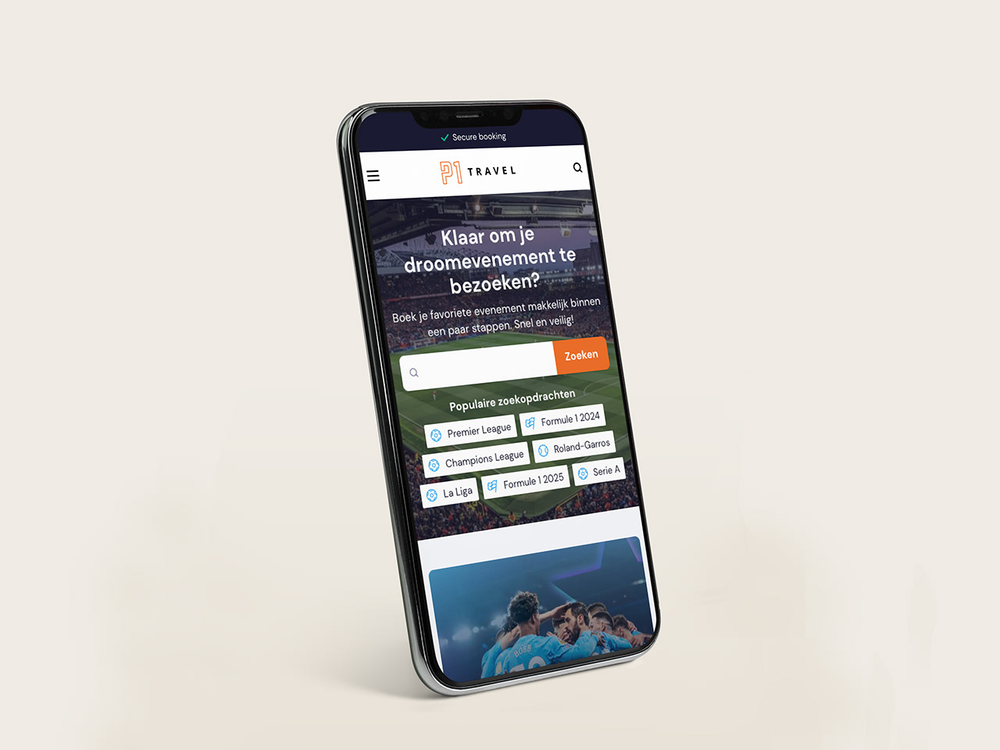
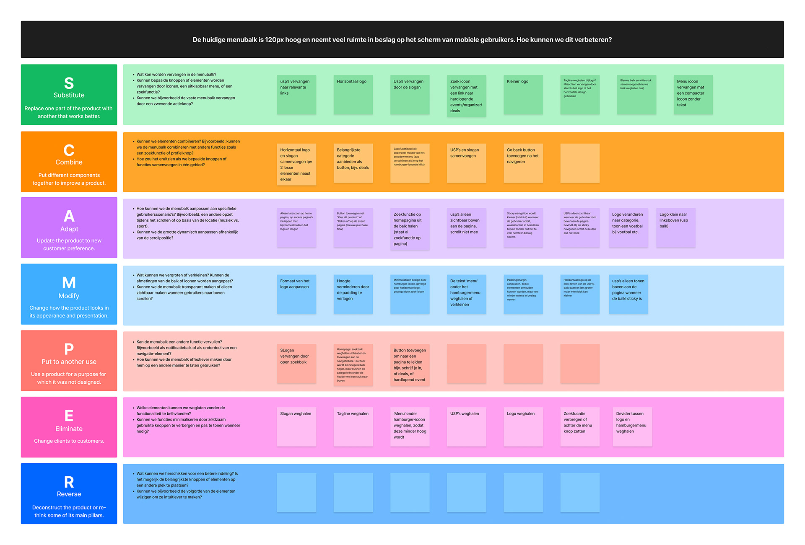

Tijdens mijn stage bij P1 Travel heb ik samen met het UX team gewerkt aan het herontwerp van de bovenste navigatiebalk. Door middel van brainstormsessies en gebruikerstests is een nieuw, opgeruimd ontwerp tot stand gekomen dat de menubalk compacter en gebruiksvriendelijker maakt — vooral op mobiel.

Samenwerking met UX team
Brainstorm methodiek toegepast
Doorgevoerd in productie
De originele menubalk nam veel ruimte in beslag op mobiele schermen. Samen met het UX team zijn we via de SCAMPER methode (Substitute, Combine, Adapt, Modify, Put to another use, Eliminate, Reverse) door alle mogelijkheden gegaan. De meest beloftevolle concepten zijn vervolgens uitgewerkt en getest met echte gebruikers. Het resultaat is een compactere, intuïtievere navigatie die nu live staat op de mobiele site van P1 Travel.

SCAMPER brainstormsessie met het UX team — van Substitute tot Reverse